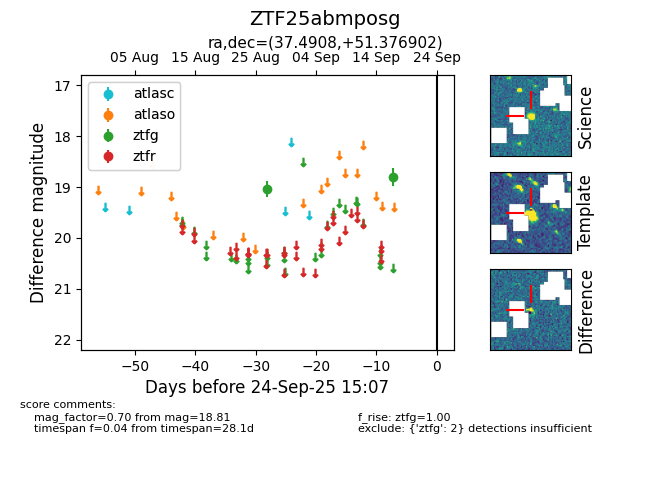

FINK: ZTF25abmposg
Lasair: ZTF25abmposg
ALeRCE: ZTF25abmposg
ZTF25abmposg (ztf,fink)
equatorial (ra, dec) = (37.4908,+51.37690)
galactic (l, b) = (138.1846,-8.55344)

last ztfg=18.81
2 ztfg detections